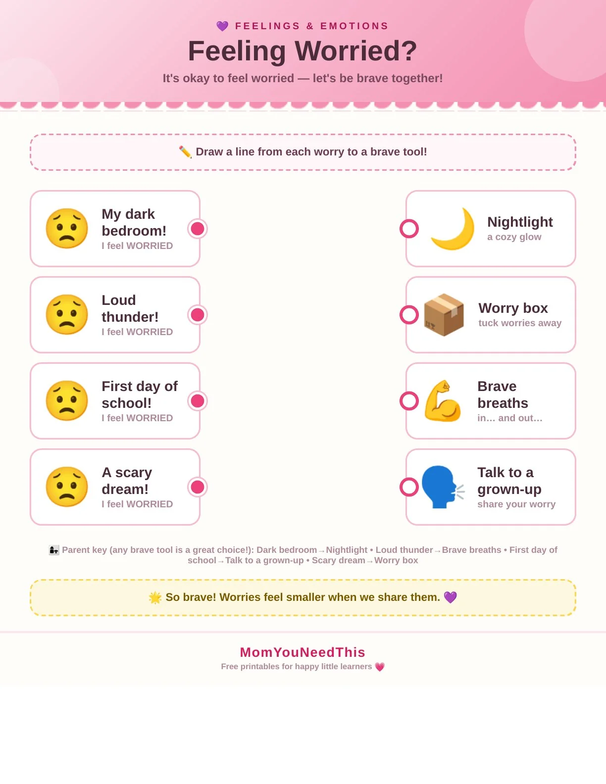

😨 Worry Activities Brave Feelings For Little Hearts
Worries can feel huge to small children. These reassuring activities help kids name their worries, understand that grown-ups are there to help, and practice brave, calming thoughts.
Quick Answer
This free printable worry activity helps toddlers and preschoolers (ages 2–5) learn about worry: the feeling that something might go wrong, why brains produce it (to protect us), and what to do with it — draw the worry, breathe slowly, tell a trusted grown-up. The core lesson: worries shrink when they are shared, and it is always okay to ask for help. Download and print at home with no signup needed.
At a Glance
- Ages: Toddlers and preschoolers (ages 2–5)
- Activity: Drawing worries; practicing brave breathing
- Skills: Emotional vocabulary and calming strategies
- Format: Printable worksheet (PDF)
- Cost: Free, no signup
Worry is a young child's brain doing its oldest job — scanning for danger — with a new imagination powerful enough to invent dangers that are not there. The goal of these pages is not to argue a child out of worrying; it is to give the worry a shape, a size, and a next step, so it stops being the biggest thing in the room.
😨 Explore Worry Activities
Draw worries away, practice brave breathing, and learn that it is always okay to ask for help.
💡 How To Use This Activity
Print these pages for a quiet, close moment — bedtime works well. Let your child name a worry, or point to one, without rushing to fix it, then practise the calming strategies on the sheets together so they are ready-made tools for the next wobbly moment. The print button opens the full-size page in a new tab if you prefer to print from there.

🖨️ Download Your Free Worry Activities Printable
Draw worries away, practice brave breathing, and learn that it is always okay to ask for help. Print it out, grab the crayons, and you're ready — no signup needed.
⬇️ Download Free Printable 🖨️ Print🎁 Free printable for toddlers & preschoolers
🌧️ What Worry Is — And What Helps
Worry is a protection system with the volume turned up. The brain's alarm exists to keep children safe — near roads, around strangers, on high climbing frames. Sometimes the alarm rings for shadows: a noise in the night, a parent five minutes late, a dog that is only large. The feeling is real even when the danger is not, and saying so — “your alarm is ringing; let's check together whether there's a fire” — respects both halves of that truth.
Worries grow in the dark and shrink in the open. A worry kept inside loops and enlarges; a worry said out loud, drawn, or handed to a grown-up gets edges. That is the science behind every strategy on these pages: drawing the worry gives it a size (usually smaller than it felt), and telling someone shares the carrying.
Brave breathing works on the body first. Slow breaths — in through the nose, out long and slow, like blowing a dandelion clock — tell the alarm system the emergency is over. The body calms, and the brain follows. Practiced at bedtime when all is well, the breath is available at 2 a.m. when it is not.
Asking for help is a strategy, not a surrender. Children should leave this page knowing their trusted grown-ups by name and that using them is the plan working as designed. If worry starts running the household — sleep, school, play all shrinking around it — that is worth raising with their doctor; big worry is common, treatable, and nobody's fault.
❓ Worry Activities FAQs
What activities are included in Worry Activities?
This page collects our free worry printables in one place: drawing worries to give them a size, practicing brave breathing, and learning that it is always okay to ask for help. Download the printable below and start learning right away.
Are these activities really free?
Yes — every printable on MomYouNeedThis is 100% free to download and print. No signup, no payment, just tap the download button. Bedtime is this set's natural moment — keep a copy where the nighttime worries actually happen. Bedtime is this set's natural moment — keep a copy where the nighttime worries actually happen.
How do I use these activities with my child?
Print these pages for a quiet, close moment — bedtime works well. Let your child name a worry, or point to one, without rushing to fix it; then practice the calming strategies on the sheets together, so they are rehearsed before they are needed. Drawing the worry and handing it to a grown-up to “hold” overnight is a ritual many children ask for by name.